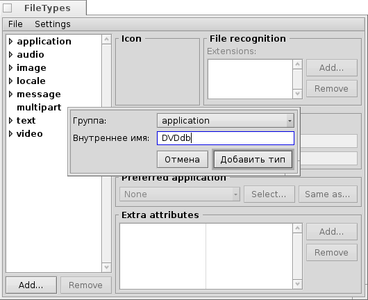
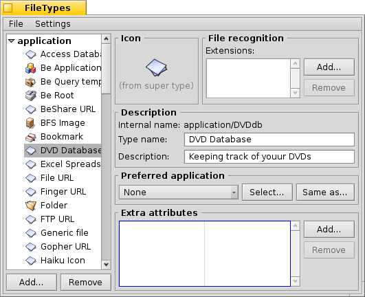
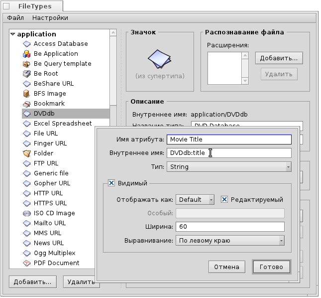
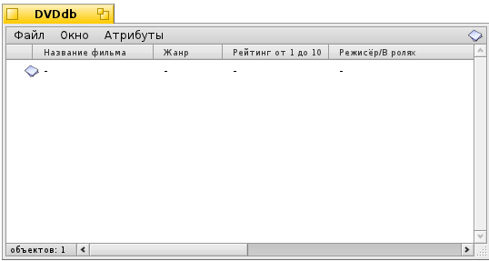
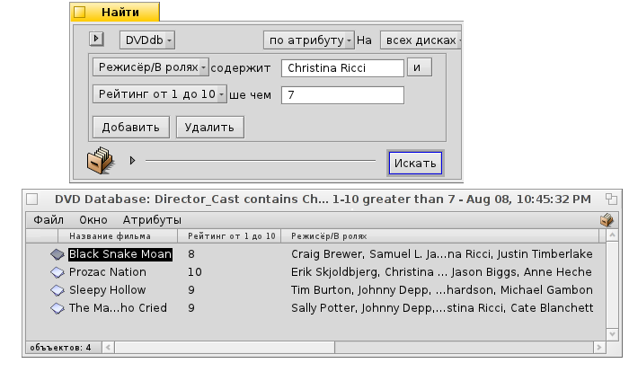

Русский
Русский Français
Français Deutsch
Deutsch Italiano
Italiano Español
Español Svenska
Svenska 日本語
日本語 Українська
Українська 中文 ［中文］
中文 ［中文］ Português
Português Suomi
Suomi Slovenčina
Slovenčina English
English| Индексация |
|
Подготовка Создание пользовательского типа файла Иконка Распознавание файла Описание Предпочтительное приложение Дополнительные атрибуты Индексация Наполнение данными Запрос к базе данных |
Семинар на тему: типы файлов, атрибуты, индексация и запросы
Этот семинар покажет способы использования Атрибутов, Запросов, Индексации и пользовательских Типов файлов. В качестве примера мы создадим базу данных для отслеживания нашей библиотеки DVD-дисков.
 Подготовка
Подготовка
Для начала решим какой тип файла и атрибуты удовлетворили бы наши потребности. Первоначально я хотел использовать файл закладок со ссылкой на страницу фильма в базе IMdB, но в Haiku пока нет браузера, работающего с закладочными файлам как NetPositive в BeOS, и я решил сделать так: сам файл будет изображением обложки фильма в фомате JPEG.
К нему мы добавим несколько атрибутов. Тут мы должны решить какими они будут (позже их необходимо проиндексировать): числовыми (целыми, дробными) или текстовыми.
Вот атрибуты, которые я хотел бы видеть для своих DVD-дисков:
- Название фильма
- Жанр
- Ссылка на него в IMdB
- Режисёр/В ролях
- Сюжет
- Мой рейтинг от 1 до 10
- Расположение у меня на полке, например: A2, B3, чтобы я смог найти DVD-диск и в реальной жизни :)
- Кто одолжил диск для просмотра
Создание пользовательского типа файла
Запустите Типы файлов (Filetypes) и кликните на кнопку в левом нижнем углу. Откроется небольшое окно, в котором определяется какая MIME группа соответствует новому тип файла. Вы также можете создать совершенно новую группу. Мы же поместим его в группу "приложения (applications)" и установим "Внутреннее имя (Internal Name)" как DVDdb.
Теперь откроется панель для вновь созданного типа файла DVDdb:

Иконка
Двойной клик по стандартной иконке откроет приложение Icon-O-Matic для создания иконки нового типа файла. Вы также можете перетащить иконку из файла другого типа, которая может использоваться для примера и модифицирования.
Распознавание файла
Вы можете добавить суффиксы такие как .txt, .jpg, .mp3, чтобы распознать файлы по их расширениям. Это полезно при работе с файлами не имеющими MIME типа, но для нашего примера это не актуально.
Описание
- Название типа (Type Name) - Отображается, например, в меню атрибутов окон Tracker и в атрибуте "Kind" любого файла.
- Описание (Description) - Немного более подробное описание.
Предпочтительное приложение
В этом выпадающем меню отображается список всех приложений, которые могут открывать данный тип файла. Здесь вы можете выбрать, какой программой должен открываться этот конкретный файл при двойном клике по нему.
| открывает диалоговое файловое окно, где вы выбираете приложение для открытия этого типа файла. Здесь мы устанавливаем ShowImage для показа обложки DVD-диска. | ||
| открывает диалоговое файловое окно, где вы выбираете любой файл, который уже имеет предпочтительный набор приложений, подходящий и под наш новый тип файла. |
Дополнительные атрибуты
Здесь вводятся все атрибуты, которые мы выбрали при подготовке. Клик по кнопке откроет следующую панель:
Название атрибута (Attribute Name) - Отображается, например, как заголовок колонки в окнах Tracker.
Внутреннее Название (Internal Name) - используется для индексации и запроса атрибута.
- Тип (Type) - Определяет значение, которое атрибут будет содержать, и как по нему делать запрос.
- для обычного текста
- для двоичных данных: 0 или 1
- для целых чисел с различными диапазонами:
- : ± 255
- : ± 65,535
- : ± 4,294,967,295
- : ± 18,446,744,073,709,551,615
- для чисел с плавающей запятой одинарной точности
- для чисел с плавающей запятой двойной точности
- формат времени и даты
- Видимый (Visible) - этот поле определяет, будет ли атрибут видимым в окне Tracker. Так как сам Tracker будет интерфейсом к нашей базе DVD-дисков, то проверим что оно активно и определим внешний вид атрибута:
- - Оставить По умолчанию (Default). В дальнейшем будет доступно больше опций, например, полоса или звездочки для оценки рейтинга и т.д.
- - Определяет, будет ли атрибут доступен для редактирования в Tracker.
- - Ширина колонки по умолчанию для этого атрибута в окне Tracker.
- - Атрибут может быть выравнен по центру, левому или правому краю.
Теперь вставим всю информацию для наших атрибутов:
| Внутреннее Название | Тип атрибута | Индексируемый? | Описание |
|---|---|---|---|
| DVDdb:title | текстовый | да | Название фильма |
| DVDdb:genre | текстовый | да | Жанр |
| DVDdb:url | текстовый | нет | Ссылка |
| DVDdb:cast | текстовый | да | Режисёр/В ролях |
| DVDdb:plot | текстовый | нет | Сюжет |
| DVDdb:rating | целочисленный | да | Рейтинг от 1 до 10 |
| DVDdb:coord | текстовый | нет | Расположение |
| DVDdb:lent | текстовый | да | Кому одолжен |
Индексация
Прежде чем начать ввод данных в нашу базу данных DVD-дисков, мы должны добавить определенные атрибуты к Индексации. Только проиндексированные атрибуты могут использоваться быстрыми Запросами в Haiku.
Итак, как мы будем осуществлять поиск в дальнейшем? Мы, вероятно, не будем запрашивать: "Что находится на моей полке B4"? или "Хочу ссылку на IMdB или содержание фильма, в котором встречается выражение 'Патриарх Шенуда'"?.
Поэтому оставляем следующие атрибуты:
| Внутреннее Название | Тип атрибута |
|---|---|
| DVDdb:title | текстовый |
| DVDdb:genre | текстовый |
| DVDdb:cast | текстовый |
| DVDdb:rating | целочисленный |
Для их индексации мы открываем Terminal и просто добавляем один атрибут за другим:
mkindex -t string DVDdb:title mkindex -t string DVDdb:genre mkindex -t string DVDdb:cast mkindex -t int DVDdb:rating
Ключ -t определяет тип атрибута как строчный (string) для всех, кроме рейтинга, который является целым числом.
Наполнение данными
Теперь, когда всё настроено, мы можем начать вводить данные в нашу базу. Так как наш основной файл представляет собой изображение обложки, то мы заходим на какой-нибудь онлайн-ресурс типа IMdB и ищем нужный фильм, для которого сохраняем изображение обложки или постер в новой папке, где мы будем хранить наши DVDdb файлы.
Открыв эту папку, мы увидим обычное окно Tracker с одним JPEG файлом в нём. Кликнув по нему правой кнопкой мыши, изменяем его тип файла на application/DVDdb при помощи Дополнения Тип файла (Filetype Add-on). Более подробно об этом описано в документе Типы файлов.
Далее мы активируем все наши DVDdb атрибуты из меню окна Tracker и упорядочим колонки на наш вкус:
Кликнув по любому пустому атрибуту (или нажав клавиши ALT+E), мы активируем режим редактирования и заполняем каждый из них. Нажимая TAB или SHIFT+TAB, вы можете перемещаться между атрибутами.
В нашем примере мы начинаем с загрузки обложки в JPEG формате, и изменяем его тип на applications/DVDdb. Но существует и другой, более удобный способ подготовки файла для дальнейшей обработки. Просто скопируйте пустой файл с уже прописанным типом в /boot/home/config/settings/Tracker/Tracker New Templates и переименуйте его в DVDdb.
Кликнув правой кнопкой мыши в окне Tracker, вы обнаружите новый пункт в подменю , помимо заданной по умолчанию Новой папки (New folder).
Запрос к базе данных
Спустя несколько часов нелёгкой работы, мы получаем довольно неплохую базу данных, и вы теперь можете сделать запрос для нахождения всех фильмов c Кристиной Риччи (Christina Ricci), имеющих рейтинг 7 и выше. :)
Вы можете назначить удобный макет атрибутов для результатов поиска определенного типа файлов.
Откройте папку, содержащую DVDdb файлы, и упорядочите атрибуты, так как вы хотели бы видеть представленные результаты запроса. Скопируйте эту схему размещения колонок через меню .
Откройте /boot/home/config/settings/Tracker/DefaultQueryTemplates, создайте новую папку и переименуйте её по типу группа/тип файла (group/filetype), заменяя косые черты символами подчеркивания, в нашем случае название будет выглядеть так: "applications_DVDdb".
Далее откройте новую папку и вставьте схему размещения через меню . Теперь всё готово, пользуемся:
